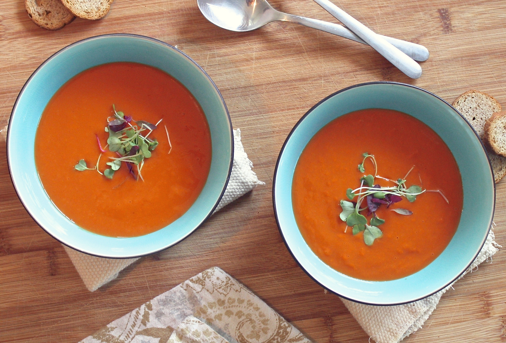

Tomaot Soup

Description
This is a recipe taste of home.com. It's savory and spicy, perfect for a cold day.
Ingredients
- 3 Tbs olive Oil
- 3 Tbs butter
- 1/4 tsp crushed red pepper flakes
- 3 carrots (large, peeled and chopped)
- 1 onion (large, chopped)
- 2 garlic cloves(minced)
- 2 tsp dried basil
- 3 x 28 oz whole peeled tomatos (cans, undrained)
- 2 Tbs tomato paste
- 3 tsp sugar
- 1 tsp salt
- 1.2 tsp pepper
- 1 cup heavy whipping cream
- fresh basil leaves (thinly sliced, optional)
Steps
- In a 6-quart stockpot or Dutch oven, heat oil, butter and pepper flakes over medium heat until butter is melted.
- Add carrots and onion; cook, uncovered, over medium heat, stirring frequently, until vegetables are softened, 8-10 minutes.
- Add garlic and dried basil; cook and stir 1 minute longer.
- Stir in tomatoes, chicken stock, tomato paste, sugar, salt and pepper; mix well.
- Bring to a boil. Reduce heat; simmer, uncovered, to let flavors blend, 20-25 minutes.
- Remove pan from heat. Using a blender, puree soup in batches until smooth. If desired, slowly stir in heavy cream, stirring continuously to incorporate; return to stove to heat through. Top servings with fresh basil and Parmesan cheese if desired.